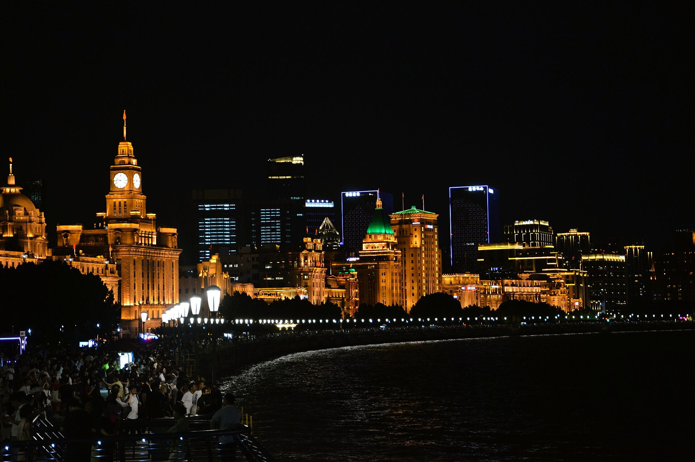
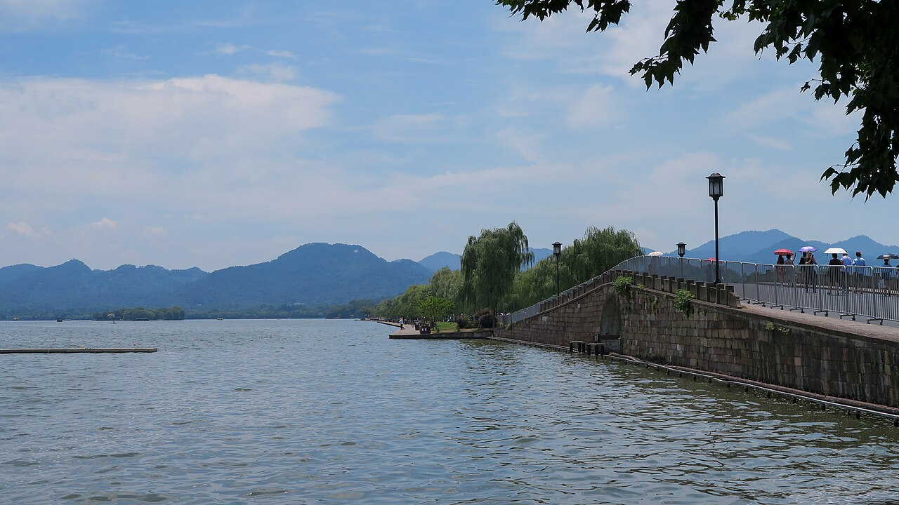
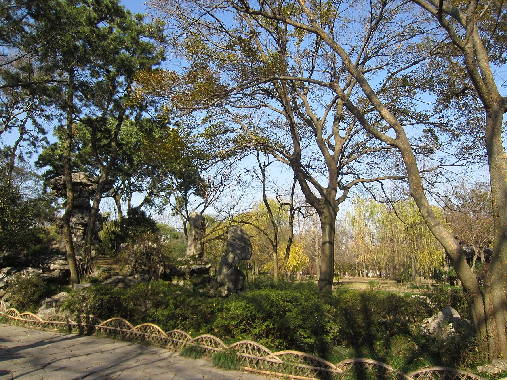

氛圍速覽：外灘夜色 · 西湖開闊 · 蘇州園林靜謐（照片來自 Wikimedia Commons）。
行程總覽
多一晚之後，杭州西湖與蘇州園林都排得進，不必二選一；酒店連住上海，免搬行李。
高鐵動臥（夕發朝至）
去程周日 G900、回程周四 G895，皆在動臥營運日。城際日皆自上海虹橋出發最省事。
去程 G900
11 月 15 日（日）夜
香港西九龍 20:00
上海虹橋 約 06:58+1
動臥 · 建議四人相鄰床位
回程 G895
11 月 19 日（四）夜
上海虹橋 20:15
香港西九龍 07:25+1
多一天緩衝，回程不趕
住宿：人民廣場／南京東路（四晚）
地鐵 1／2／8 交匯；去虹橋走 2 號線約 40–50 分。杭州、蘇州當日來回都從虹橋進出。
杭州 vs 蘇州（怎麼分）
多一天後兩者都去：杭州主打「好看」，蘇州主打「園林」。
- 11/17 杭州：西湖開闊、好拍，青少年較不易悶；虹橋 ↔ 杭州東約 1 小時。
- 11/18 蘇州：拙政園／平江路，更文靜精緻；虹橋 ↔ 蘇州約 25–40 分，當日來回很輕鬆。
出發準備
行李與證件
- 回鄉證／證件：四人有效證件
- 動臥：耳塞、眼罩、薄外套；大行李放架上
- 疊穿：11 月中旬上海／杭州白天約 12–18°C，早晚涼
- 步行鞋：西湖與蘇州石板路都要走
出發前 checklist
- G900（11/15）與 G895（11/19）動臥四人相鄰
- 上海酒店 11/16 入住 – 11/20 退房（住 16–19 四晚）
- 11/17 上海虹橋 ↔ 杭州東 當日來回票（早去晚回）
- 11/18 上海虹橋 ↔ 蘇州／蘇州北 當日來回票
- 拙政園等園林可網上預約時段（旺季建議）
實用小貼士
-
為何多一天值得
三晚時杭州與蘇州只能擇一或很趕；四晚可各給一整天，回程日（11/19）只留輕鬆城區＋趕動臥，節奏最適合家庭。
-
青少年友善
不排迪士尼。西湖可租車騎半圈或遊船；蘇州若園林覺得靜，平江路／觀前街小吃補足趣味。
-
美食方向
上海：小籠、生煎、蔥油麵。杭州：東坡肉、龍井蝦仁、片兒川。蘇州：蘇式麵、松鼠桂魚（可分享）。